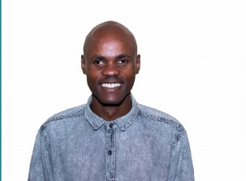

Nkosomzi Yase
Human Resources Professional
Westonaria, Gauteng · Branch Consultant, Finbond Mutual Bank
At a glance
HR and administration professional with hands-on experience in employee records management, recruitment coordination, workforce audits, and disciplinary documentation. HR Administrator background from Deloitte and Scorpion Tactical, now applying that same accuracy and people-first approach as a Branch Consultant at Finbond Mutual Bank.
Recently added a practical AI skill set on top of core HR — built and deployed a working productivity tool during a Naspers-backed accelerator programme.
Experience
Work history
Branch Consultant
Current
Finbond Mutual Bank — Germiston
- Client-facing branch operations at the Golden Walk Shopping Centre branch
- Applying HR-grade attention to accuracy, documentation, and confidentiality in a financial services setting
HR Administrator
Scorpion Tactical
- Managed employee records and maintained accurate, audit-ready personnel files
- Coordinated recruitment activity from requisition through to onboarding
- Supported workforce audits and prepared disciplinary documentation
HR Administrator
Deloitte
- Gained foundational experience across HR operations and employee record-keeping
- Worked with SAP SuccessFactors and ServiceNow in day-to-day HR administration
Skills
Where I add value
HR Operations
Recruitment Coordination
Employee Relations
Workforce Audits
Employee Records Management
Disciplinary Documentation
SAP SuccessFactors
ServiceNow
Featured project
Workday Assistant
AI-powered workplace productivity tool
Built during the CAPACITI × Naspers Labs AI Skills Accelerator
A Smart Email Generator, Meeting Notes Summarizer, and AI Task Planner in one tool — designed to save admin time on repetitive HR and office tasks.
workday-assistant.lovable.app
Code: github.com/nkosomziyase-crypto/workday-assistant
Education & certifications
National Diploma, Human Resources Management
AI Skills Accelerator (ASA 13)
CAPACITI × Naspers Labs
Google AI Essentials
Coursera
Beyond HR
Gospel pianist of over ten years, playing by ear and leading choir rehearsals at church. Also a committed football fan. Faith and music keep the same discipline and attentiveness that show up in my HR work.
References
Available on request.